Capstone / 2023
Fashion / installation / worldbuilding
Liminality between comfort and over-consumption
Interstice
/ˈin(t)ərstəs/ — a space that intervenes between two things.
An independent fashion installation examining the uncanny space between protection and concealment, individuality and conformity, practical clothing and impossible material.
Threshold controls
Move the project between comfort and unease
01 / Origin
A desire to restore my own childlike wonder.
I wanted an escape into a world that felt rigid, alien, and built on a long-standing utilitarian culture.
The project began as a reaction to corporate cycles that package individuality as trend. Interstice imagines clothing built from intent, survival, and psychological permanence instead: garments that could outlast the system that sells them.
The isolation of the pandemic sharpened that position. Masks felt unsettling and comforting at once—another layer that made people harder to perceive but easier to speak through. Early games once remembered as vivid worlds returned as deserted, low-resolution spaces. That gap between memory and reality became the atmosphere.
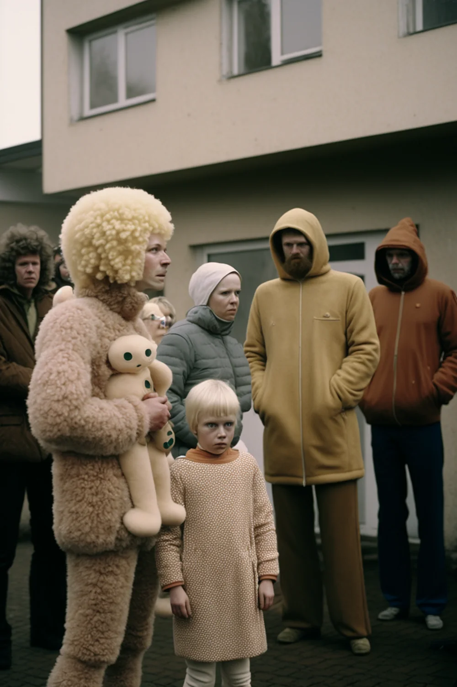
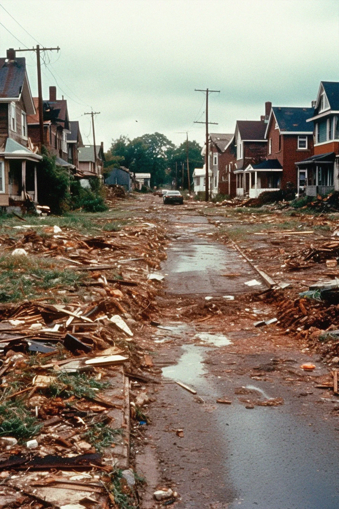
02 / Thesis
Comfortis not the opposite ofdiscomfort.
The uncanny arrives when something is familiar and unfamiliar at the same time.
Pragmatic industrial garments are recognizable. Fur masks, excessive padding, missing closures, foreign bagginess, and obscured faces make that familiarity unstable. The collection remains wearable enough to invite the body, but strange enough to make the invitation questionable.
01 / Liminality
A detached social role becomes ambivalent and hazy. Interstice treats the masked, function-led garment as a threshold: connected to society through utility, detached from it through erased identity.
Framework / Arnold van Gennep + Victor Turner
02 / Normality
Individualism can become its own compulsory conformity. The project resists the demand to perform uniqueness by stripping garments back to blunt function, then disturbing that function from within.
Framework / Mark G. E. Kelly
03 / Over-consumption
The collection was prototyped virtually so its critique of overproduction did not require a parallel pile of samples. In the final installation, discarded clothing becomes the literal ground beneath the new garments.
Method / virtual prototyping + found waste
03 / Three figures
Protection becomes obstruction.
Choose a figure in the controls. Each look combines a recognizable industrial base with one material decision pushed beyond practicality.
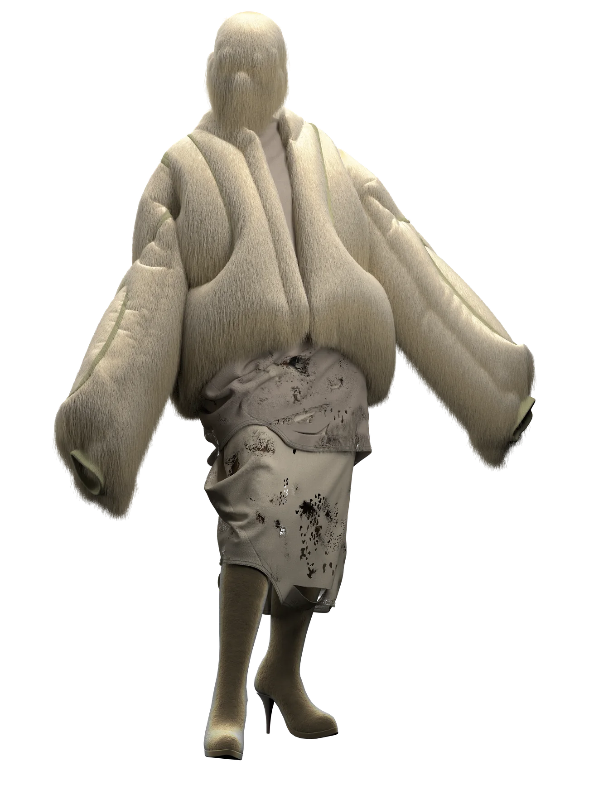
Shelter / concealment
Soft enclosure
A large flapped fur puffer and fully obscured face turn softness into distance. Protection expands until it interrupts recognition.
- Base
- Puffer / jersey dress
- Disruption
- Shaggy volume / mask
- State
- Protected / unreadable
04 / Development
Build a world. Remove the obvious. Add the wrong material.
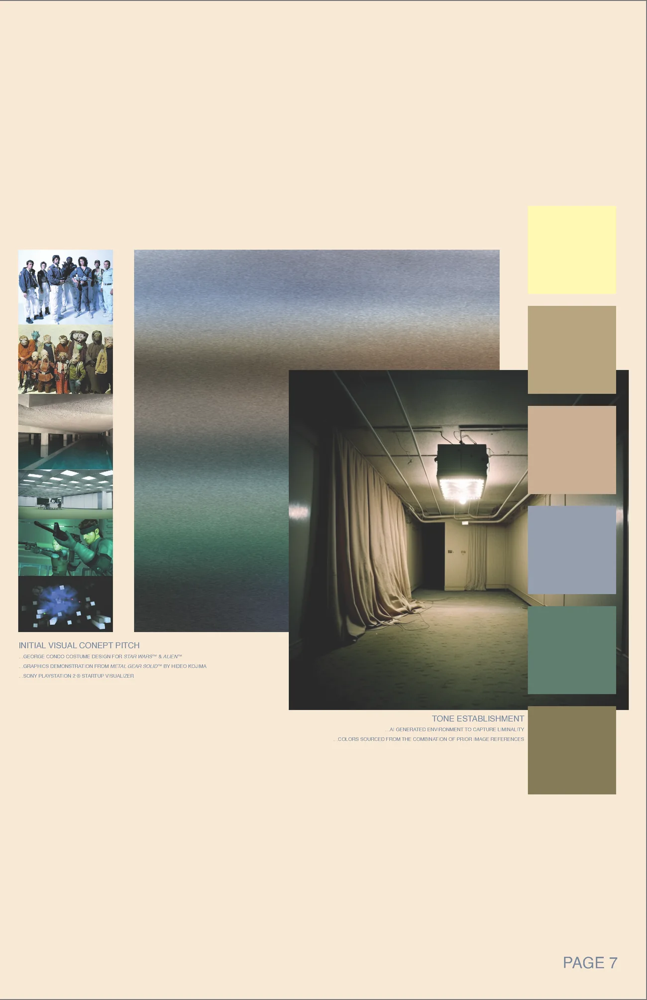
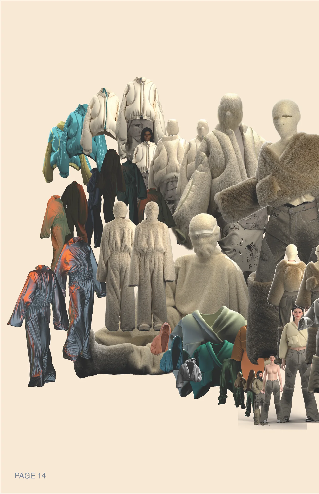
- 01
Generate atmosphere
AI began as a moodboard—a way to locate an unfamiliar society before designing its clothes.
- 02
Block the useful
Jackets, pants, tops, and masks were drafted virtually in CLO 3D around practical, recognizable forms.
- 03
Erase the expected
Zippers, buttons, drawstrings, and conventional embellishment were removed or concealed.
- 04
Disturb the body
Wrinkles, tears, misplaced volume, and excessive fur pushed functional clothing into the uncanny.
- 05
Return it to a world
The finished garments seeded a second image-generation cycle, expanding the collection into a community and place.
05 / Worldbuilding
The clothing does not end at the body.
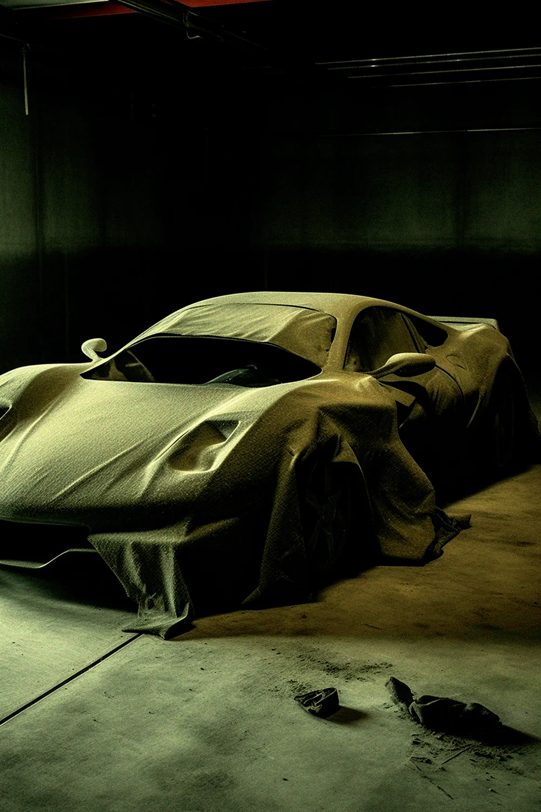
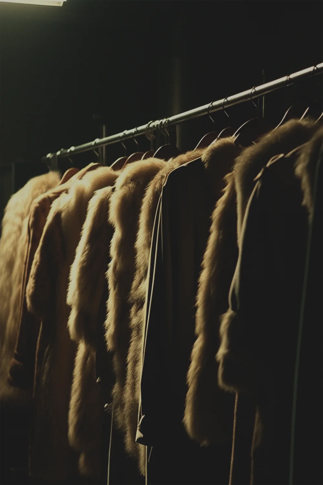
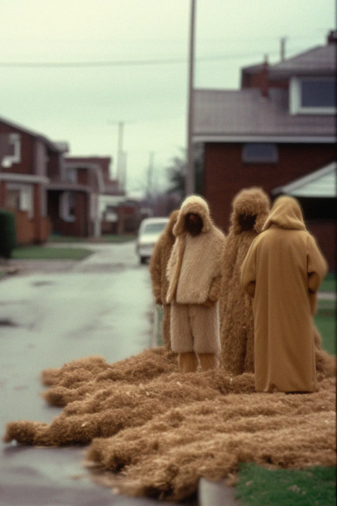
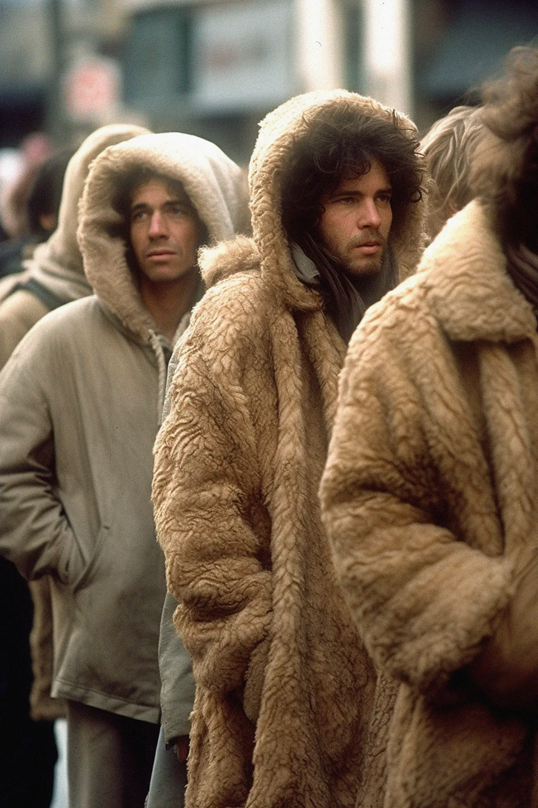
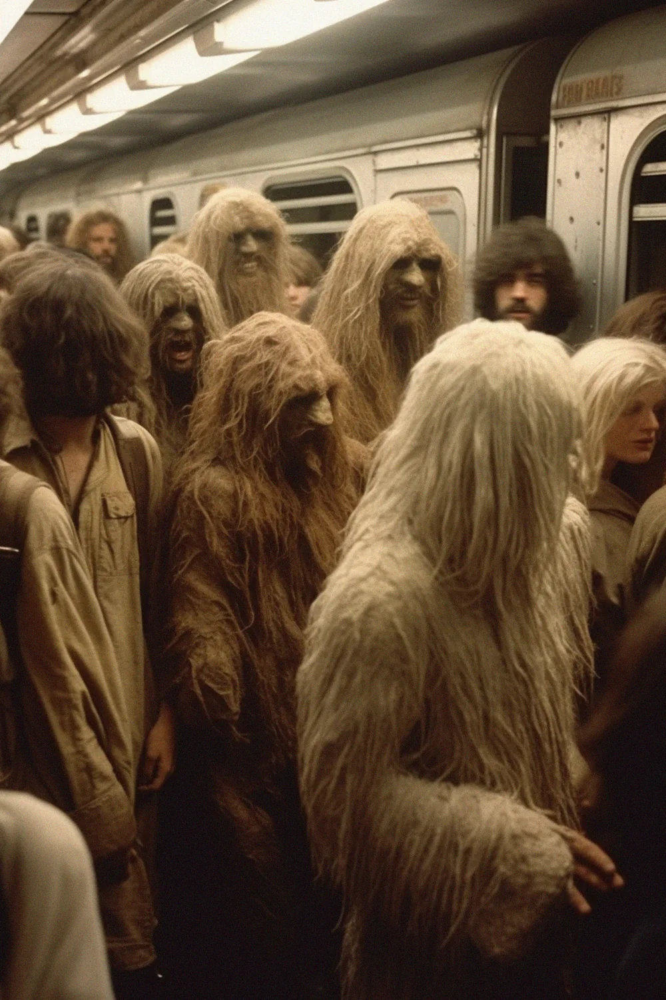
06 / Final installation
The image hovers.
The waste has weight.
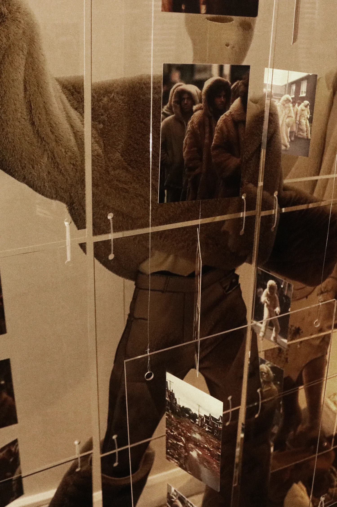
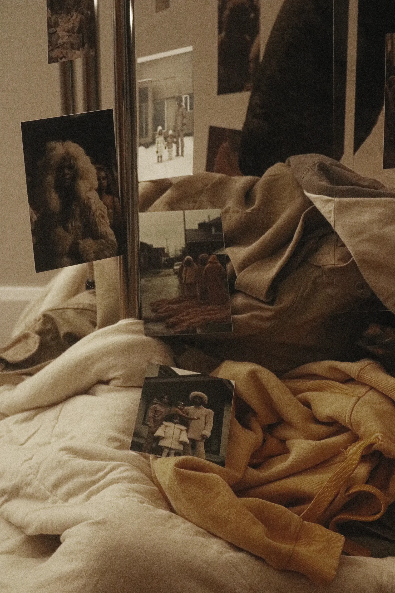
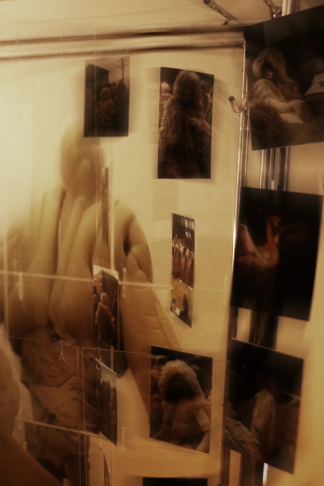
Three garments were divided across smaller transparent panels, connected vertically so a static print could still shift and breathe.
The panels preserve full-body scale while separating the garment from physical reality. Viewers can align themselves behind the figures; below, they walk on bleached discarded clothing. The proposed future remains weightless overhead while the consequences of the present accumulate underfoot.
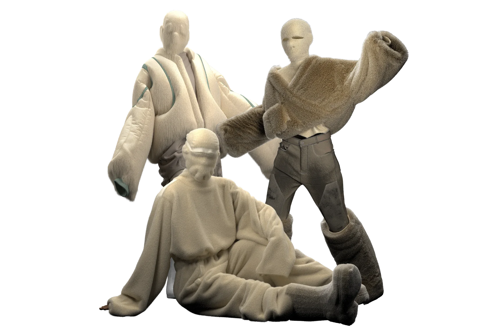
07 / Reflection
Clothing that feels designed to last—physically and psychologically.
The final work is not a forecast or a solution. It is a threshold: an attempt to make function, protection, waste, technology, and identity occupy the same uneasy room. More than anything, it became a foundation for how I want to build future work—world first, garment second, experience throughout.